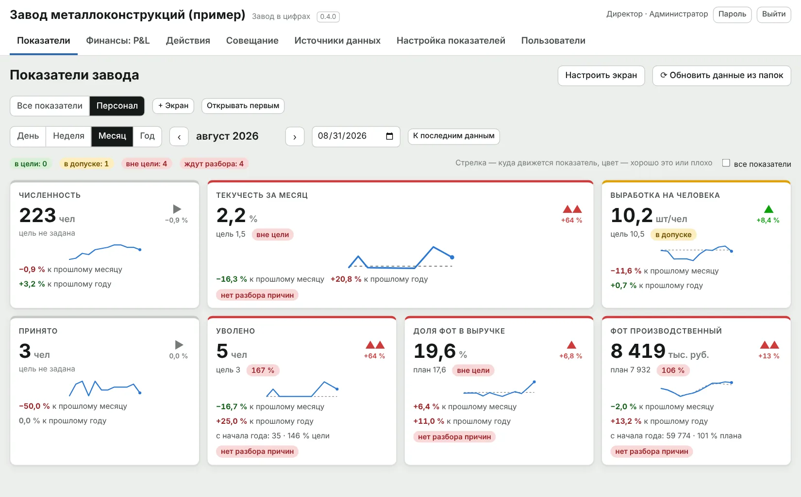
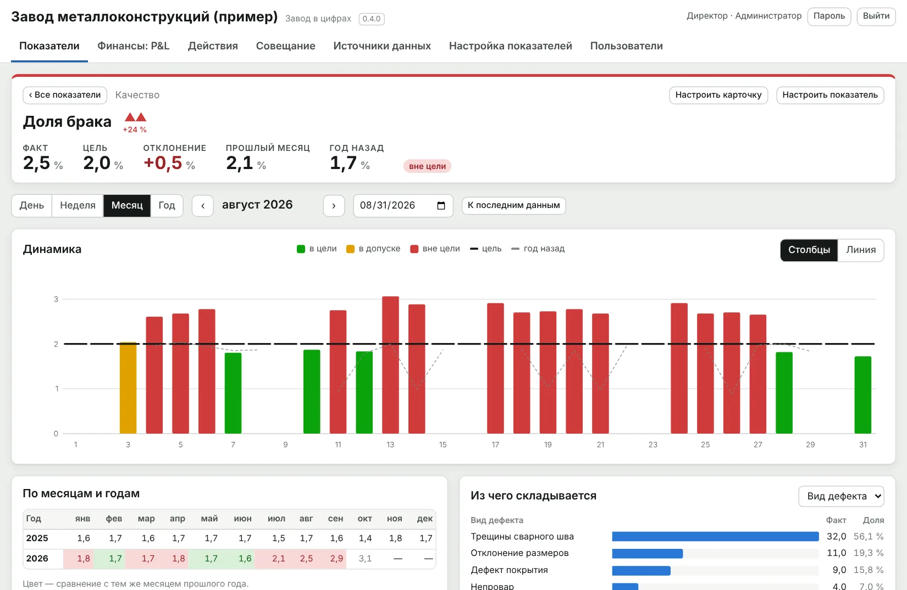
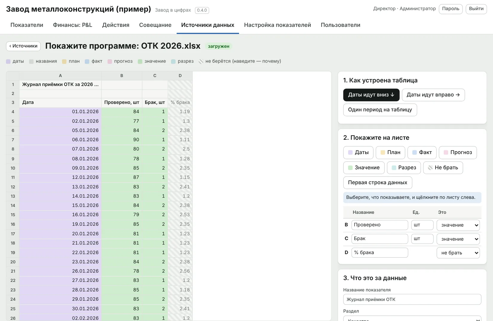

Plant Performance / Завод в цифрах
Аналитика
Завод в цифрах
Производство, качество, деньги и люди — на одном экране и в одной логике: показатель, цель, отклонение, причина, действие, результат. Данные берутся из файлов Excel, которые завод уже ведёт.
Программа для Windows и macOS. Работает на компьютере предприятия, без облака.
- 1. ПоказательДоля бракаавгуст, цех формовки
- 2. Цель2,0%допуск до 2,3%
- 3. Отклонение3,4%вне цели на 1,4 п. п.
- 4. ПричинаТрещины58% брака, после смены режима
- 5. ДействиеДо 12.09главный технолог: вернуть режим, проверить датчики
- 6. Результат2,1%сентябрь: помогло, причина не повторилась
Условный пример. Так выглядит разбор одного показателя в программе «Завод в цифрах».
Ролик: 50 секунд
ИИ-ассистент аналитика
Кнопка «Отчёт ИИ» на любой странице: директор выбирает период и показатели, ассистент пишет текст для совещания. Числа считает программа, модель только описывает готовую таблицу.
Условные данные.
- Отчёт по P&L и оценка рисков — по просьбе директора своими словами
- Числа в тексте, которых нет в таблице программы, подсвечиваются как возможная выдумка
- Видно, что именно ушло в модель; персональные данные в облако не уходят по умолчанию
- Модель на компьютере предприятия или облачная — на выбор администратора; по умолчанию ассистент выключен
- Текст можно править; последние 30 отчётов хранятся в архиве с фильтрами
Каждое отклонение доводится до действия и результата
Показатель вне цели не закрывается сам. Его владелец называет до трёх главных причин — программа подсказывает их из данных — и по каждой назначает действие с ответственным и сроком. Через месяц видно, что стало с показателем и повторилась ли причина.


- Подсказка причин из журналов: виды дефектов, причины простоев, изделия с отставанием
- Перенос срока — только с причиной; просроченные действия видны на главном экране
- Оценка эффекта: «помогло», «частично», «не помогло»
- Протокол совещания сохраняется и печатается с логотипом завода
Финансы: P&L по месяцам
Отчёт о прибылях и убытках собирается из бюджета доходов и расходов в Excel. Видно не только выпуск и брак, но и то, во что они превращаются в деньгах: где себестоимость ушла от бюджета и что будет с прибылью к концу года.
- Факт к бюджету или к прогнозу, по месяцам или накопительно
- Выручка, себестоимость с составляющими, EBIT, EBITDA, чистая прибыль
- «Ожидается за год»: факт закрытых месяцев плюс бюджет оставшихся
- Чего нет в файле, программа считает сама и помечает «расчёт»
- EBITDA ниже бюджета разбирается так же, как брак: причины, действия, срок

Персонал в тех же цифрах
Численность, приём и увольнения берутся из кадрового файла. Текучесть, выработка на человека и доля ФОТ в выручке считаются сами и сравниваются с целью, прошлым месяцем и прошлым годом.
Так видна связь, которую обычно собирают вручную: ушли люди — упала выработка — выросла доля ФОТ — просела прибыль.

Производство и качество — каждый день
У каждого показателя цель или план из файла, допуск, состояние, тренд и сравнение с прошлым годом. Щелчок по плитке открывает карточку: динамика, месяцы и годы, из чего складывается результат.


Как это устроено
Файлы остаются как есть
Программа читает папки с файлами завода. Необычный файл ей показывают щелчками по листу — следующие такие читаются сами.
Свой экран для каждого
Директор, главный инженер, директор по персоналу собирают экран из плиток: состав, порядок, размер.
Расчётные показатели
Доля брака, выработка, рентабельность задаются в настройке как отношение или сумма других показателей.
Текущий выпуск — 0.5.6. Номер отражает порядок обновлений программы; каждый выпуск перед выходом проходит 376 автоматических проверок.
Кому подходит
Заводу, у которого цифры уже есть — в Excel, в выгрузках из 1С, в журналах, — но нет одной картины и привычки доводить отклонение до результата.
Собственник
Прибыль, выпуск и люди в одной логике; видно, что делается по каждому отклонению и кто отвечает.
Директор завода
Готовая основа для совещания: показатели вне цели, причины, действия со сроками и их эффект.
Директор по персоналу
Текучесть, выработка и доля ФОТ рядом с выпуском и прибылью, а не в отдельном отчёте.
К отрасли программа не привязана. Отрасли, которым она подходит лучше всего.
Скачать
Презентация и шесть документов из комплектов целиком, без регистрации. По ним видно, как документы устроены и насколько подробны.
Программы
- Презентация Plant PerformancePDF, 9 слайдов: обе программы и комплекты документовСкачать PDF
- Ролик «Завод в цифрах»MP4, 50 секунд, титры на экранеСкачать MP4
- Ролик «ИИ-ассистент: P&L и риски»MP4, 51 секунда, условные данныеСкачать MP4
- Ролик «ИИ-ассистент: отчёт для директора»MP4, 93 секунды, условные данныеСкачать MP4
Документы: завод ЖБИ
- Технологическая карта ТК-ТВО-01Тепловлажностная обработка изделий в камерах · PDF, 5 страницСкачать PDF
- Инструкция ОТК ИК-ОК-03Контроль прочности бетона · PDFСкачать PDF
- Чек-листы операторов на сменуФормы для печати A4 · PDFСкачать PDF
Документы: завод водонагревателей
- Технологическая карта ТК-ЭМ-02Обжиг эмали · PDF, 5 страницСкачать PDF
- Инструкция ОТК ИК-ОК-03Контроль эмалевого покрытия · PDFСкачать PDF
- Доски участковПлан и факт по часам, формы для печати A3 · PDFСкачать PDF
Напишите нам
Расскажите в двух строках, что за завод и что хотите посмотреть. Ответим, покажем программу в работе и пришлём документы, которых нет на сайте.